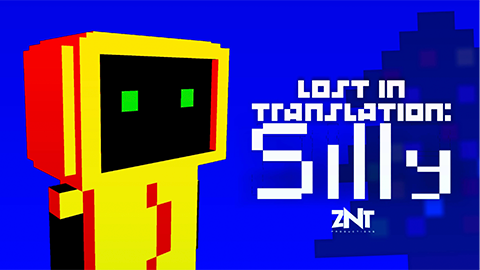
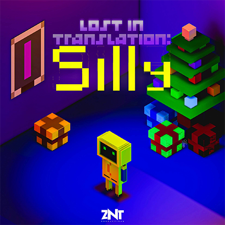

Lost in Translation: Silly (2021)
Arte conceitual e Design Gráfico

"Silly” é um jogo de suspense para desktop e dispositvos mobile da ZNT Productions.Fui responsável pelo design de personagens, criação de sprites, imagens promocionais e o design do título para a DLC.
- Cliente: ZNT Productions
- Softwares usados: Cinema 4D, Adobe Sketch, Photoshop.
- Autor: Christian Coelho
